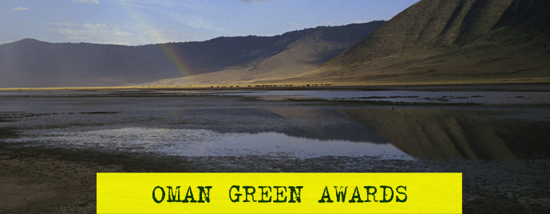

| |
|
|
 |
| |
The threat to our environment is real and has never been
more evident. |
| |
 |
|
|
|
CONTACT US |
SUBSCRIBE OER NEWSLETTER |
HOME |
|
 |
|
 |
Reduce, Reuse,
Recycle
You can recycle most things and it’s is beneficial in two ways:
-
it reduces the inputs (energy and raw materials) to a production
system, and reduces the amount of waste produced for disposal.
-
On average every person in the UK throws away their own body
weight in waste every seven weeks. We all know we should recycle
more but we can’t always be bothered - and where do you put the
stuff that’s not going in the bin?
Did you know that:
-
1 recycled tin can would save enough energy to power a
television for 3 hours.
-
1 recycled glass bottle would save enough energy to power a
computer for 25 minutes.
-
1 recycled plastic bottle would save enough energy to power a
60-watt light bulb for 3 hours.
-
Up to 60% of the rubbish that ends up in the dustbin could be
recycled.
The unreleased energy contained in the average dustbin each year
could power a television for 5,000 hours.
-
On average, 16% of the money you spend on a product pays for the
packaging, which ultimately ends up as rubbish.
-
As much as 50% of waste in the average dustbin could be
composted.
Reduce
-
don’t buy heavily packed goods
-
buy ‘loose’ food rather than pre-packaged
-
stop junk mail and faxes through the Mailing Preference Service
-
cancel delivery of unwanted newspapers, donate old magazines to
waiting rooms
-
use your own shopping bags when visiting the supermarket or use
the doorstep delivery service
-
grow your own vegetables. Many varieties can be grown in small
gardens
use a nappy laundry service, and save disposable ones for
holidays and long journeys
-
take a packed lunch to work or school in a reusable plastic
container
Reuse
-
reuse carrier bags. Each person in the UK uses an average of 134
plastic bags each year
-
reuse scrap paper for writing notes, etc
-
reuse envelopes - stick labels over the address
-
rent or borrow items you don’t use very often - e.g. party
decorations and crockery. Some supermarkets hire out glasses for
parties, saving on disposable cups
-
donate old computer and audio visual equipment to community
groups or schools
-
buy rechargeable items instead of disposable ones e.g. batteries
and cameras
-
buy things in refillable containers e.g. washing powders
-
buy concentrated products which use less packaging
-
take old clothes and books to charity shops, or have a car boot
sale
look for long lasting (and energy efficient) appliances when
buying new electrical items - ensure these are well-maintained
to increase product life cycle
Recycle
-
choose products in packaging which you know can be recycled
-
compost - lots of kitchen waste can be composted. Contact your
local council for details of local composting schemes and
details of any compost bin sales.
-
buy products made from recycled materials. Most supermarkets now
stock a wide range of these items
|
|
|
|